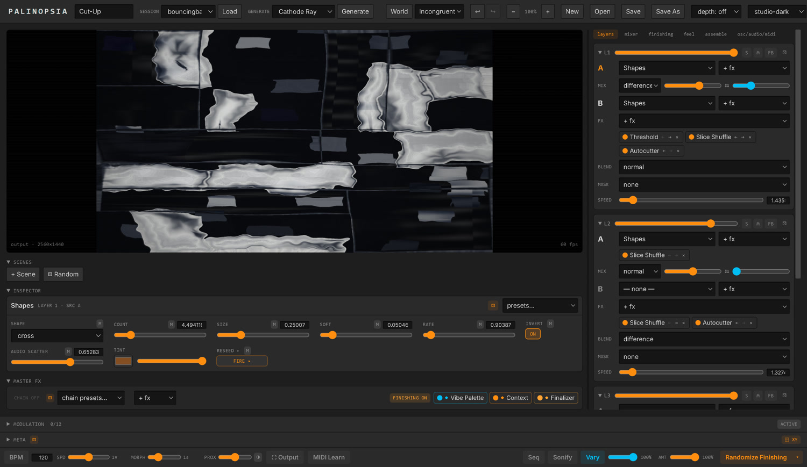
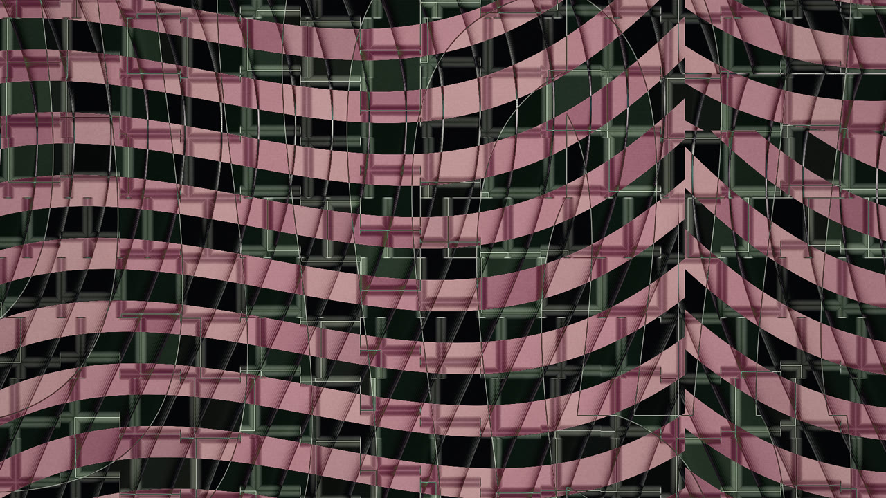
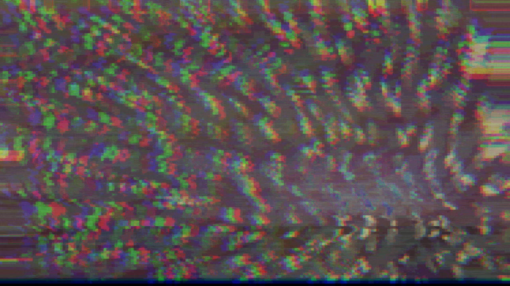
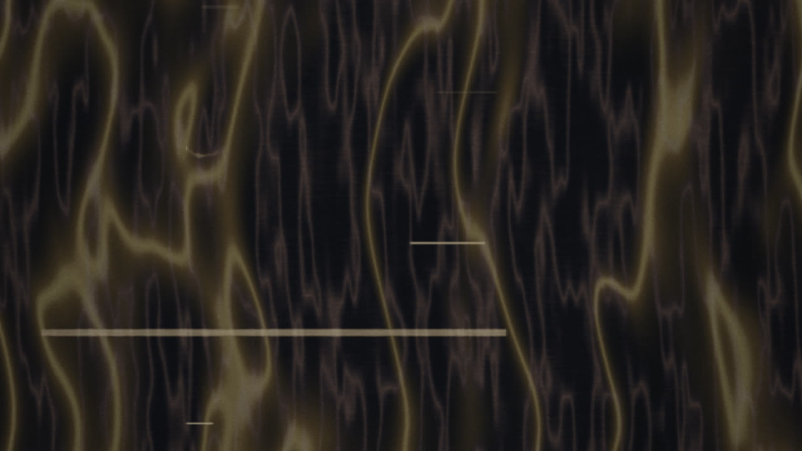
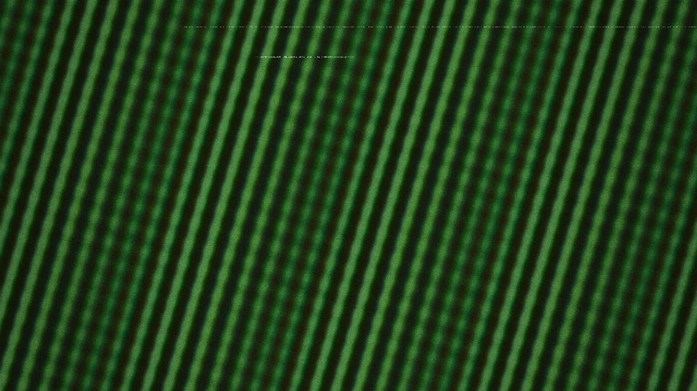
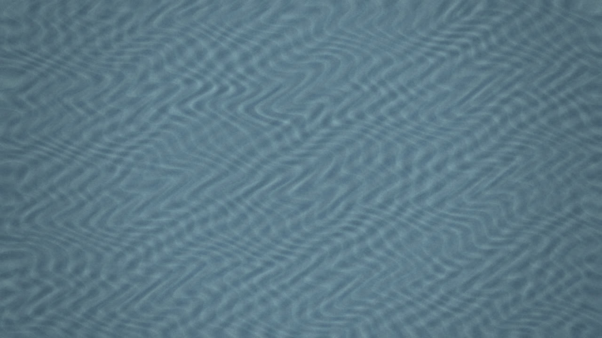
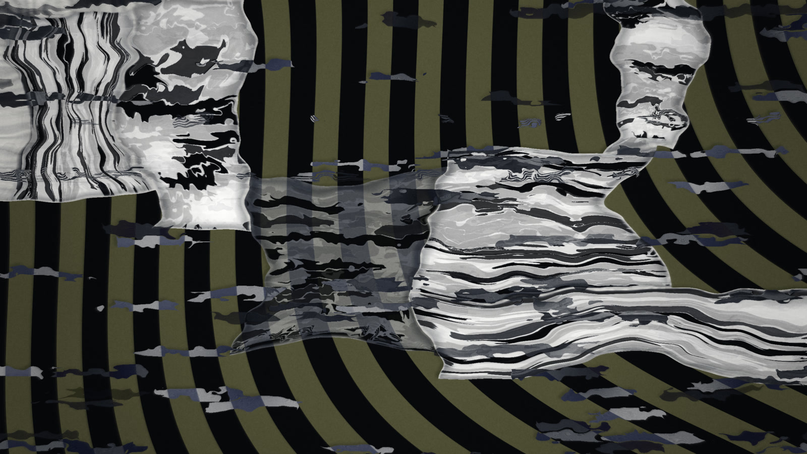

Palinopsia · Quickstart
Palinopsia (Opsia for short) is a WebGL2 compositor you perform, not a tool you wire. It stacks layers of generated and treated video, masters the whole picture through a fixed set of stages, and lets you steer every parameter live: by hand, by an internal modulation brain, or over OSC from a companion app like dataFLOU_compositor or hardware like Pandore.
This page is the shortest path from a cold launch to something you like on screen. If you have never opened the app, start here.

Four regions, and you will live mostly in two of them.
The preview and scene bank sit top-left: the picture as it renders, and the numbered slots where you keep the looks you like. Under the preview is the Inspector, which always shows the controls for whatever you last clicked (a source, an effect, a knob). Below that are the three pinned master stages that colour and finish the whole image. Down the right column is the layer stack: the four layers you build the picture from. That right column also swaps to other views (the mixer, the global feel, the sound page), but the layers are its home.
Every frame below was built by the app alone, no external footage. Pick a recipe from Generate and it composes the whole session for you.






A few ideas that make everything else click into place.
That is the instrument. The long list of sources, effects and nodes is vocabulary you learn over time. The shape of the thing does not change.
Get sound out of it?
Press S for Sonify. The image itself synthesizes audio in real time, inside the app, no external software. The probes you see drawn on the picture are the instrument.
Use a MIDI controller?
Press L to arm MIDI Learn from anywhere, click a control (it pulses), then move a knob or hit a pad. It stays armed, so you can map the next control right away.
Go fullscreen or record a take?
Press O for the Output page: pick a display, set the resolution, and record. The take keeps rolling if you leave the page, so you can tweak parameters mid-recording.
Undo a mistake?
Ctrl+Z and Ctrl+Shift+Z, up to 100 steps. Ctrl+S saves the session.
Calm it down when a feedback effect runs away?
Press 0 to flush every self-feeding buffer at once (trails, feedback, accumulators), or H to freeze the output on the current frame while you sort things out.
Learn the vocabulary without reading everything?
Hover any effect, source or preset for a one-line description, and lean on Generate: it shows you whole families of the look in context, which is faster than adding things blind.
Save scenes early and often. A scene is a full snapshot of the instrument, and you recall it with 1 to 9, so building a small bank gives you somewhere to return to when a session drifts.
Double-click any slider or knob to reset it to its neutral value. This works almost everywhere, including the A/B mix and the video trim handles.
When you want the full vocabulary (33 sources, 52 effects, 20 native nodes, the modulation matrix, the sequencer and the Sonify voices), read the complete README. To drive Palinopsia from any OSC brain, see the OSC reference. The whole instrument is reachable over OSC, MIDI or the interface, through one write path.